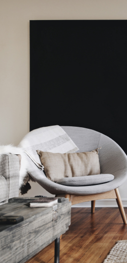
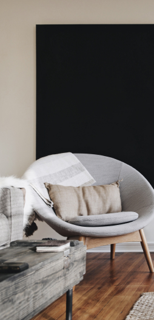

Biography
Katya Mills
Art Director
Scenography / Styling / Creative Photography / Design

“The more I deal with the work
as something that is my own,
as something that is personal,
the more successful it is.”

Modern Web Studio
Art Director
Scenography / Styling / Creative Photography / Design
“The more I deal with the work
as something that is my own,
as something that is personal,
the more successful it is.”

Jess Wonder
From/ Be more flower
Skills/ Design Strategy / Marketing
Kameron Clein
From/ Be more flower
Skills/ Design Strategy / Marketing
LOUISSE RED
From/ Be more flower
Skills/ Design Strategy / Marketing

I just really want to do good work and work with some great people, people who challenge me.
Website
www.whitepapers.com
Creativity
www.whitepapers.com
Creativity
www.whitepapers.com

 
